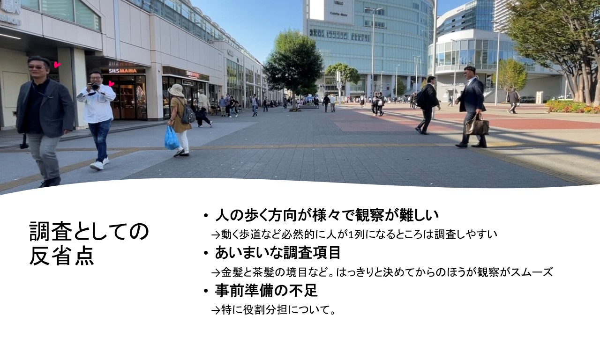

観察結果
髪を染めている人の割合は男性と女性で大きく違っている！

私たちは桜木町駅前で947人の男女を観察させていただきました。10月17日に実際にカウントしたそれぞれの合計は左図の通りです。男性と女性の髪を染めている人の割合を比べてみると、女性のほうが男性より圧倒的に多いことがわかります。どうして女性のほうが髪を染めている人の割合が多いのでしょうか。
どのような人が髪を染めているのか・どのように染めているのか


人々がどのように髪を染めていたのか、についての詳細です。男性は特に、大学生のような若い人たちが髪を染めていました。しかしそのほとんどが茶色や金色などの比較的自然な色で、奇抜な色に染めていた人は１人という結果になりました。調査の時間帯がお昼だったことや平日だったことから、当日の調査では特に髪を染めていない男性が多かったと推測します。
また、女性については髪を染めている人は男性よりも幅広い年代に見られました。白髪を隠すため、かわいく見せるためなど年代によって目的は様々のようです。
服装との関係はあるのか


次に髪と服装の関係について調査しました。髪を染めているのであれば、服装は髪色に合うよう工夫しているのではないか、というのが私たちの立てた仮説です。着ている服のジャンルと色から髪色との関係を考えてみました。
これらの結果から私が考えたことは、人々は髪色に合わせるように服装を工夫するというよりは、どんな服装でも合いやすいように、髪色は奇抜な色にしないのだろうということです。左図より、髪を染めている女性のうち、最も多かった服の系統は「フェミニン」（女性らしい）です。ここに属する女性たちは全員が茶髪や赤っぽい髪色でした。そのため、より自然にかつかわいく個性を表現しようとしているのが伝わりました。
一方男性はフォーマルな服を着ていた人が多かったせいもあり、髪を染めている人は滅多に見られませんでした。
でも、女性がフォーマルな服装かつ髪を染めていても、別におかしいとか思わないですよね。確かなことは言えませんが、まだ私たちの社会では、男性の身だしなみとおしゃれの境界線が厳しいのかもしれません。男性が自分を若く、よりよく見せようとして何がいけないのでしょうか。「見た目のことをあまり気にしないのが男らしい」のでしょうか。

「フェミニン」な服を着ていて、かつ髪を染めていた人の割合は31.4%で、これは２番目に高い割合です。最も染めている人の割合が高かったのは「モード」な服を着ていた人です。これには、最近はやりの韓国をリスペクトした服装や、周りとは一線を画しているような存在感を放つ前衛的な服装を含めています。「モード」な服を着ていた人のうち、髪を染めていた人の割合はなんと80%！データが少ないことも関係して割合が高くなっていますが、５人のうち４人が染めているというかなり高確率な結果になりました。流行に敏感な人は服装だけでなく髪の色にもこだわりをもって存分におしゃれを楽しんでいることがわかります！かわいく見せたい「フェミニン」な人、自分の好きなものを全力で表現する「モード」な人、髪を染める目的は十人十色だということがわかります。
服の系統は髪を染めることと、強い相関関係があるとは言い難い結果になりました。では髪を染めることと相関関係が強いのはどんな要素なのでしょう。
反省
17日のプレゼンで、役割分担についての反省をしました。これを踏まえて、動画を見て抽出する項目を班内で分けました。分担して上手く仕事が分散できたのは良かったのですが、縦軸の話だけをして、横軸について確認をとらなかったのが反省点です。画像を見て頂くと、表に縦軸しかなかったり横軸があっても項目がばらばらだったりして分かりにくくなってしまっています。観察の授業においては「確認不足」が私たち２班の全体的なキーワードだと思います。
TOPへ戻る